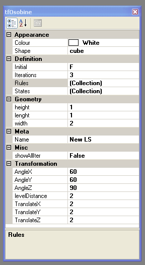

| Variables: |
All letters between A and T |
| Constants: |
- >x Move Forward along object X axis
- <x Move Backward along object X axis
- >y Move Forward along object Y axis
- <y Move Backward along object Y axis
- >z Move Forward along object Z axis
- <z Move Backward along object Z axis
- +x Rotate Clockwise around X axis
- -x Rotate Counter-Clockwise around X axis
- +y Rotate Clockwise around Y axis
- -y Rotate Counter-Clockwise around Y axis
- +z Rotate Clockwise around Z axis
- -z Rotate Counter-Clockwise around Z axis
- [ Save Transformation
- ] Restore Transformation
|
| Examples: |
F>x+zF>x-zF>x-zF>x+zF |
| Procedures: |
- Set F for Initial property then edit rules property

- Set F for Name property and F>x+zF>x-zF>x-zF>x+zF for value property

- Sometimes you must change number of iterations to see result

|